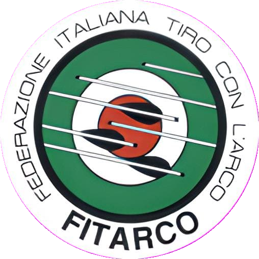
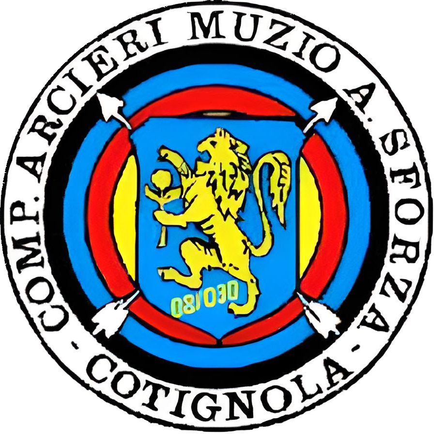
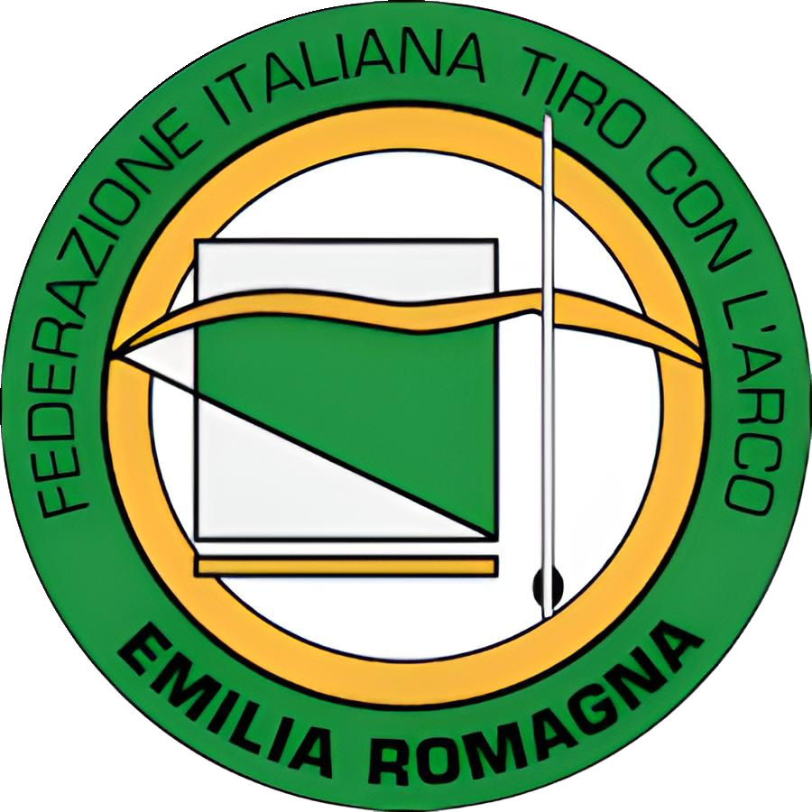

A.s.d. Compagnia Arcieri Muzio Attendolo Sforza



La nostra società di tiro con l’arco nasce sul finire degli anni Sessanta dalla passione di alcuni cotignolesi per questo sport (tra i soci fondatori, vogliamo ricordare Pietro Baldassarri, Prof. Luciano Bassi e Giovanni Ballardini).
Siamo stati i primi in Romagna, i secondi in Regione e i tredicesimi in Italia ad aderire alla Federazione Italiana di Tiro con l’Arco (FITArco) e da allora abbiamo raggiunto molteplici traguardi, tra cui la Stella di Bronzo al Merito Sportivo per l'anno 2020.
Fin dall’inizio, lo scopo principale è stato quello di riunire giovani desiderosi di dedicarsi alla pratica del tiro con l’arco e di partecipare alle gare per promuovere e diffondere questa attività sportiva.
Lo spirito che contribuì alla nascita di questa Compagnia continua inalterato nel tempo, grazie alla volontà e alla tenacia dei suoi soci.
La nostra società organizza corsi di tiro con l’arco per adulti e ragazzi a partire dai 10 anni. Le attività sono gestite da tre istruttori riconosciuti dalla FITARCO e l’attrezzatura per il corso base è fornita da noi.
Durante il periodo invernale (da ottobre a marzo), abbiamo a disposizione la palestra G. Gordini, presso la Scuola Primaria Angeli del Senio di Cotignola. In questo periodo, gli allenamenti si svolgono martedì, giovedì e venerdì dalle ore 20.30 alle ore 22.30
Durante il periodo estivo (da aprile a settembre), ci trovate, invece, presso il nostro campo di tiro a Cotignola. La struttura è attrezzata con diversi paglioni che coprono tutte le distanze fino ai 90 metri e l’accesso è riservato ai soli soci. Gli istruttori, sono generalmente presenti il martedì e il giovedì dalle 20:00 alle 22:00 e al pomeriggio (secondo orari accordati con gli atleti) .
Ogni anno, la nostra compagnia organizza due gare.
900 ROUND D’ESTATE: si svolge l'ultima domenica di Agosto, presso il nostro campo di tiro.
TROFEO BIZANTINO – GARA INDOOR 18 mt.: si svolge la prima domenica di dicembre, presso la Palestra Comunale di Barbiano.
Le nostre gare sono aperte a tutte le divisioni, dai giovanissimi ai master, con diverse distanze o bersagli in base alla categoria di appartenenza.
Come di consueto, è possibile trovare l'invito ufficiale sul sito di FITArco.
Vuoi fare una prova di tiro con l'arco?
Scrivici a segreteria@arcierimasf.it e ti risponderemo al più presto per accordare un allenamento.
Oppure passa a trovarci al nostro campo di tiro (in Via Sinistra Senio, civico 2A) o nella palestra G. Gordini (in via Guglielmo Marconi, civico 7), nei giorni e negli orari di allenamento.